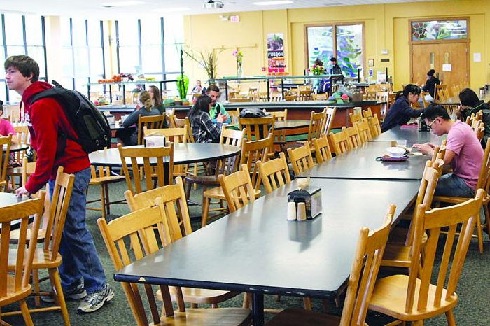
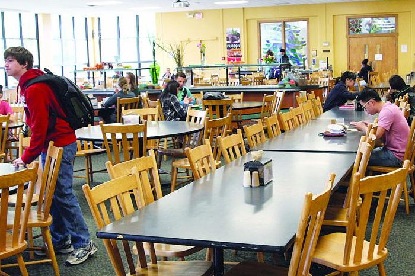

Narsimha Reddy Engineering College (NRCM) is promoted & managed under the inspiring & dynamic Chairmanship of Sri. J. Narsimha Reddy and a fleet of dedicated members. This is the first institution belonging to “JAKKULA EDUCATIONAL SOCIETY” was established in 2007 to serve the people of this backward region of the state of Andhra Pradesh (India). This institution is developed strictly